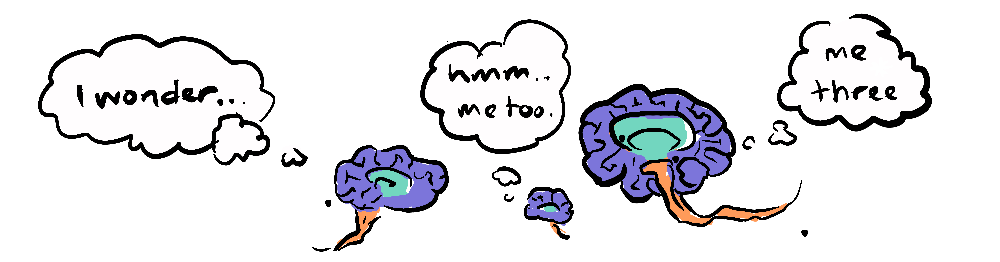
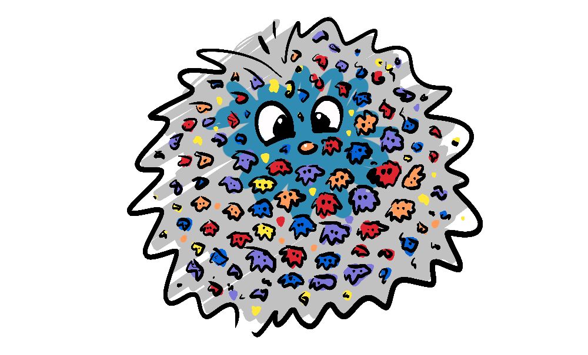

Imagine you wake up one morning to a phone call, you’ve won a million dollars in the weekly lotto draw, but you don’t remember entering. The operator informs you that the government has, in a bizarre act of wealth redistribution, put your tax dollars towards a single lottery ticket every week for every person in the country. Somehow you have been completely ignorant of this fact for over a decade. You receive your cheque and are handed an , the program is completely secretive, no one knows about this lottery until they win it.
What are the chances of winning such a competition? There's an equation for this.
(How many winners per draw x how many draws) / How many entrants = chances of winning
Well, since the lottery has been running for 10 years, your country has a population of, let’s say 10 million, all of the money each week is allotted to the winner and no one can win twice.
(1 x 2000) / 10,000,000 = 1 / 5000
So, you have a 1 in 5000 chance of having won it by now. Not great odds. However, from the perspective of everyone who is aware of the lottery (the 2000 winners so far), the chances of winning are 100%.
We have all won this lottery, in a cosmic sense. Our prize...
Now, consciousness is a pretty incredible prize, it is literally everything to us. But how did we gain the good fortune to be born into a world where such a wonder is even possible? Surely not merely by a luck?
We have no idea how many entries we’ve had in the cosmic lottery, but we know that, like with the opening analogy, all the other entries that did not win the prize of consciousness are not aware they haven’t won. So, the fact that we live in a universe where there exist beings that perceive the universe, is actually unremarkable, on the contrary it is inescapable. If there were to be other possible universes that didn’t contain agents capable of perception, they would never be perceived.
This is the basis for what’s called the weak anthropic principle—the idea that the universe must be compatible with conscious observers, because otherwise, no one would be here to notice it. It doesn’t explain why the universe exists, or why it’s this kind of universe—only that conscious observers will, by definition, find themselves in universes that are finely-tuned to create observers.

It sounds tautological, even trivial—and yet it’s profound.
The term "Anthropic" comes from the Greek word ánthrōpos, meaning "human" in the sense of a person or an observer. So, the Anthropic Principle relates to our particular human-centred perspective. The reason the formulation I've raised is called the Weak Anthropic Principle, is exactly because it doesn't impose an explanation for the coincidence of all the conditions for life and consciousness, it simply illustrates that we shouldn't be surprised to find ourselves in such a universe.

The Strong Anthropic Principle seeks instead to explain the coincidence teleologically—meaning, because the universe is fine-tuned for life, it must have a designer. And our universe does appear incredibly fine-tuned for life—physicists understand that any small variation in a long list of universal constants, such as the Gravitational Constant, or the Strong Nuclear Force would preclude the existence of the many emergent systems upon which life itself and our human-centred perspective are dependent.
This teleological explanation has been opposed by those who claim the multiverse hypothesis, an explanation that allows for a multitude of cosmic lotto tickets, as it were, making the cosmic lottery model viable. But I don't even think this is necessary, because the constants, while fine-tuned, are not independent dials, rather, they are interdependent—shifting one may be compensated for by another, reaching another natural equilibrium. If that’s the case, then life-permitting conditions might not be as improbable as they seem. After all, the universe didn’t produce life instantly or everywhere—it took billions of years of gradually emerging complexity for life to emerge in one place (that we know of). If the settings were truly razor-edge perfect, life could have emerged in... a day, for instance, and we might expect to see a great deal more of it rather than vast expanses of seemingly empty space. Instead, the universe seems permissive, but not prescribed—robust enough to allow life, but not designed to guarantee it.

Further to this, all this fine-tuning talk assumes that consciousness is particular to our form of life, when in fact we can conceive of many different forms of consciousness, arising from entirely different building blocks, consciousness is simply an awareness of the physical world. Then imagine all the forms of consciousness we can't conceive of.
If you think about it, if we had instead been the recipients of an entirely unrecognisable form of awareness or sentience, we would not only still see a world perfectly suited for us, but would also probably assume that that form of consciousness could only be exactly as it is.
So, we are necessarily a winner of the cosmic lottery, but how unlikely was this? Let's return to our equation:
(How many winners per draw x how many draws) / How many entrants = chances of winning
We just plug in those numbers right? Okay, how many winners are there per draw (how often consciousness arises given the right conditions)? Hmm, not sure...
How many draws have there been (how many times the conditions that can give rise to consciousness have occurred)? No idea...
How many entrants (how many sorts of consciousness there could be)? Um... shrugs...
(Hmm... not sure x No idea) / Um... shrugs = (? x ?) / ? = ?
We simply don't have the variables required to calculate how remarkable or unremarkable our universe is, all we can know is that no universe without the conditions to create observers is being observed.
So, what has this got to do with Non-Zero-Sum games? Well, once we accept that the lottery of conscious existence selects only for winners, we can begin to ask: what kind of game have we entered? And we find that we are playing a non-zero-sum game, because a universe that give rise to complex organisms, by necessity, involves non-zero-sum processes—and not just a particular line of non-zero-sum processes, but layers upon layers of non-zero-sumness.
Each new emergent layer builds on a prior substrate—animal life emerges from the transmission of genes, minds emerge from the internal and external networks of animals, ideas emerge from brains and the transmission of ideas leads to greater understanding and cooperation, leading to language, technology and even artificial intelligence.
And when you think about it, if there weren't processes that give rise to greater complexity all around us (win-win games) we never would have developed the complexity required for consciousness in the first place. We explore many different facets of these cosmic non-zero-sum games in our emergence series, where we see the results of layers of emergence, leading to a system hiding in a corner of an otherwise relatively empty universe, fuelled by the entropic processes in the sun, providing an almost endless supply of energy to our world—an abundant world, which I think is quite exciting.

The weak anthropic principle allows for the possibility that we are at the beginning rather than at the end of a designed world. We necessarily find ourselves in a world where we can craft a future with the wind at our backs, because we are surrounded by the multitude of non-zero-sum systems that gave rise to us, and can be harnessed for even greater ends.
Although it wasn't intended this way, this post has turned out to be a sort of prequel to the emergence series here on the site. So, if this sort of writing gets you thinking, you should really check it out, it begins with Conway's Game of Life.